The epiprocess package provides additional functionality for users to aggregate signals over time and space.
Time aggregation
For time, epiprocess leverages the existing tsibble object for manipulating time series data using tidyverse tools. In this vignette, we provide functionality to convert the the standard epi_df data container into a tsibble, and demonstrate some useful functionality. For more details on the tsibble package, please refer to the package documentation.
First, let’s load some data using the covidcast. Here we’re loading confirmed new incidence of cases from January 1st, 2020 to May 31st, 2021 for counties in Vermont and New Hampshire (sourced from JHU).
library(covidcast)
library(epiprocess)
library(ggplot2)
library(tsibble)
library(dplyr)
data("county_census")
# get county level metadata from the covidcast package
subset_county <- county_census %>% filter(STNAME %in% c("Vermont", "New Hampshire")) %>%
rename(geo_value = FIPS) %>%
filter(STNAME != CTYNAME) %>%
select(STNAME, CTYNAME, geo_value)
# pull fips out as geo_values
fips <- subset_county %>% pull(geo_value)
# pull signal using covidcast package
case_data <- covidcast_signal(data_source = "jhu-csse", signal = "confirmed_incidence_num",
start_day = "2021-01-01", end_day = "2021-05-31", geo_type = "county",
as_of = "2022-02-04",
geo_values = fips)
# convert to epi_df format, joining up with the county metadata to attach county names and state.
case_epidf <- as.epi_df(case_data, geo_type = "county",
time_type = "day", issue = max(case_data$issue)) %>%
rename("new_cases" = value) %>%
select(geo_value, time_value, new_cases) %>%
left_join(subset_county, by = "geo_value")Casting epi_df into tsibble
A tsibble is comprised of two components: a key that identifies the unit of observation, and an index that identifies the time component. Each observation should be uniquely identified by key and index. If we take a look at our epi_df object, we can expect geo_value as the unit of observation, and time_value as the column that specifies time (in proper datetime formats). All epi_df objects should have a geo_value and a time_value.
head(case_epidf)## # A tibble: 6 × 5
## geo_value time_value new_cases STNAME CTYNAME
## <chr> <date> <dbl> <chr> <chr>
## 1 33001 2021-01-01 0 New Hampshire Belknap County
## 2 33003 2021-01-01 0 New Hampshire Carroll County
## 3 33005 2021-01-01 0 New Hampshire Cheshire County
## 4 33007 2021-01-01 0 New Hampshire Coos County
## 5 33009 2021-01-01 0 New Hampshire Grafton County
## 6 33011 2021-01-01 0 New Hampshire Hillsborough Countyepi_process provides a convenient S3 method to coerce epi_df objects into tsibble. This method will always use time_value as index. For key, the default is the union of geo_value and other variables specified in the other_keys metadata field of an epi_df. However, here is an additional key argument in the conversion function that allow us to specific more explicitly which variables to use as keys. For this data set here, we also want to key by state name as well as county name.
The simplest approach is to let as_tsibble.epi_df() automatically use geo_value and time_value
head(as_tsibble(case_epidf))## # A tsibble: 6 x 5 [1D]
## # Key: geo_value [1]
## geo_value time_value new_cases STNAME CTYNAME
## <chr> <date> <dbl> <chr> <chr>
## 1 33001 2021-01-01 0 New Hampshire Belknap County
## 2 33001 2021-01-02 47 New Hampshire Belknap County
## 3 33001 2021-01-03 63 New Hampshire Belknap County
## 4 33001 2021-01-04 25 New Hampshire Belknap County
## 5 33001 2021-01-05 16 New Hampshire Belknap County
## 6 33001 2021-01-06 35 New Hampshire Belknap CountyYou can use the key argument to specify re-keying or keying by multiple columns.
# if use the key argument to key by state name
head(case_tsibble <- as_tsibble(case_epidf, key = c("CTYNAME")))## # A tsibble: 6 x 5 [1D]
## # Key: CTYNAME [1]
## geo_value time_value new_cases STNAME CTYNAME
## <chr> <date> <dbl> <chr> <chr>
## 1 50001 2021-01-01 0 Vermont Addison County
## 2 50001 2021-01-02 27 Vermont Addison County
## 3 50001 2021-01-03 12 Vermont Addison County
## 4 50001 2021-01-04 12 Vermont Addison County
## 5 50001 2021-01-05 10 Vermont Addison County
## 6 50001 2021-01-06 8 Vermont Addison County
# can key by multiple columns
head(as_tsibble(case_epidf, key = c("CTYNAME", "geo_value", "STNAME")))## # A tsibble: 6 x 5 [1D]
## # Key: geo_value, STNAME, CTYNAME [1]
## geo_value time_value new_cases STNAME CTYNAME
## <chr> <date> <dbl> <chr> <chr>
## 1 50001 2021-01-01 0 Vermont Addison County
## 2 50001 2021-01-02 27 Vermont Addison County
## 3 50001 2021-01-03 12 Vermont Addison County
## 4 50001 2021-01-04 12 Vermont Addison County
## 5 50001 2021-01-05 10 Vermont Addison County
## 6 50001 2021-01-06 8 Vermont Addison CountyHowever, similar to SQL keys, if the keys do not uniquely identify each row, then tsibble returns errors
# returns error if index only by state name since each observation is no longer
# unique as there are multiple numbers associated with each state per day
head(as_tsibble(case_epidf, key = "STNAME"))## Error: A valid tsibble must have distinct rows identified by key and index.
## ℹ Please use `duplicates()` to check the duplicated rows.Gap-filling
One of the major advantages of the tsibble is the ability to handle implicit gaps in the data. In other words, tsibble can infer what time scale we’re interested in (e.g. daily data), and detect apparent gaps (e.g. when values are reported on 2021-01-01 and 2021-01-03 but not 2021-01-02). Then, we can use certain functions to make these missing entries explicit, which allows further downstream processing like imputation or for understanding patterns of missing data. For our example, let’s randomly remove certain dates from the data set.
set.seed(1020)
remove_index <- sample(seq_len(nrow(case_tsibble)), size = 100, replace = FALSE)
# since we're keying by geo_value, remove extra information about names
case_tsibble <- case_tsibble %>% select(CTYNAME, time_value, new_cases) %>%
slice(-remove_index)
head(case_tsibble)## # A tsibble: 6 x 3 [1D]
## # Key: CTYNAME [1]
## CTYNAME time_value new_cases
## <chr> <date> <dbl>
## 1 Addison County 2021-01-01 0
## 2 Addison County 2021-01-02 27
## 3 Addison County 2021-01-03 12
## 4 Addison County 2021-01-04 12
## 5 Addison County 2021-01-05 10
## 6 Addison County 2021-01-06 8Let’s use a functions from the tsibble package to handle this implicit missingness:
tsibble::has_gaps shows whether or not gaps exists broken down by each key.
## # A tibble: 6 × 2
## CTYNAME .gaps
## <chr> <lgl>
## 1 Addison County TRUE
## 2 Belknap County TRUE
## 3 Bennington County TRUE
## 4 Caledonia County TRUE
## 5 Carroll County TRUE
## 6 Cheshire County TRUE
tsibble::scan_gaps gives detailed reports per identified gaps.
## # A tsibble: 6 x 2 [1D]
## # Key: CTYNAME [2]
## CTYNAME time_value
## <chr> <date>
## 1 Addison County 2021-03-11
## 2 Addison County 2021-03-21
## 3 Addison County 2021-05-10
## 4 Belknap County 2021-03-14
## 5 Belknap County 2021-04-07
## 6 Belknap County 2021-05-18
tsibble::count_gaps gives summary statistics by aggregating gaps within similar time periods
head(counts <- count_gaps(case_tsibble))## # A tibble: 6 × 4
## CTYNAME .from .to .n
## <chr> <date> <date> <int>
## 1 Addison County 2021-03-11 2021-03-11 1
## 2 Addison County 2021-03-21 2021-03-21 1
## 3 Addison County 2021-05-10 2021-05-10 1
## 4 Belknap County 2021-03-14 2021-03-14 1
## 5 Belknap County 2021-04-07 2021-04-07 1
## 6 Belknap County 2021-05-18 2021-05-18 1We can also plot the missingness pattern using summary statistics from tsibble::count_gaps.
ggplot(counts %>% filter(CTYNAME %in% unique(.$CTYNAME)[1:5]),
aes(x = CTYNAME, color = CTYNAME)) +
geom_linerange(aes(ymin = .from, ymax = .to)) +
geom_point(aes(y = .from))+
geom_point(aes(y = .to)) +
labs(x = "County", y = "Date") +
theme_minimal() +
coord_flip() +
theme(legend.position = "none")
tsibble::fill_gaps fill in these gaps with explicit values.
By default, all gaps are made explicit and specified as NA. However, the function allows us to specify various ways to add assign different values to gaps instead of the default NA. Additional usage can be found in the function documentation page.
missing_date <- scan_gaps(case_tsibble) %>% slice(1) %>% pull(time_value)
# turning implicit gaps into explicit gaps with NA
fill_gaps(case_tsibble) %>% filter(time_value >= missing_date - 1) %>% head()## # A tsibble: 6 x 3 [1D]
## # Key: CTYNAME [1]
## CTYNAME time_value new_cases
## <chr> <date> <dbl>
## 1 Addison County 2021-03-10 6
## 2 Addison County 2021-03-11 NA
## 3 Addison County 2021-03-12 6
## 4 Addison County 2021-03-13 6
## 5 Addison County 2021-03-14 15
## 6 Addison County 2021-03-15 6
# filling gaps with 0 instead of NA
fill_gaps(case_tsibble, new_cases = 0) %>% filter(time_value >= missing_date - 1) %>% head()## # A tsibble: 6 x 3 [1D]
## # Key: CTYNAME [1]
## CTYNAME time_value new_cases
## <chr> <date> <dbl>
## 1 Addison County 2021-03-10 6
## 2 Addison County 2021-03-11 0
## 3 Addison County 2021-03-12 6
## 4 Addison County 2021-03-13 6
## 5 Addison County 2021-03-14 15
## 6 Addison County 2021-03-15 6If we want to impute using other approaches such as last observation carry forward (LOCF), we can leverage existing functions like tidyr::fill with our explicit NA gaps.
library(tidyr)
gapfilled <- case_tsibble %>% group_by_key() %>% fill_gaps() %>%
tidyr::fill(new_cases, .direction = "down")
gapfilled %>% filter(time_value >= missing_date - 1) %>% head()## # A tsibble: 6 x 3 [1D]
## # Key: CTYNAME [1]
## # Groups: CTYNAME [1]
## CTYNAME time_value new_cases
## <chr> <date> <dbl>
## 1 Addison County 2021-03-10 6
## 2 Addison County 2021-03-11 6
## 3 Addison County 2021-03-12 6
## 4 Addison County 2021-03-13 6
## 5 Addison County 2021-03-14 15
## 6 Addison County 2021-03-15 6An important consideration when utilizing these functions is the argument .full. By default, the _gaps family of functions detects gaps by key, which means that gaps are only detected within individual periods defined by key. The argument .full here which specifies whether gaps are detected (or filled) across the period defined by the entire data set. For example, if we have daily case counts for two states, State A with contiguous data from January to June, and state B with continguous data from February to June. If .full = FALSE, then there would be no gaps. If .full = TRUE, then there would be a gap in state B since state B is missing January from the overal time period defined by the entire data set.
Aggregate to different time-scales
We can then aggregate to different time-scales using functions tsibble::index_by() and tsibble::summarise() functions. index_by essentially changes the index component by applying a transformation function (such as those from the lubridate package) to extract higher order time scales (e.g. weeks from days, months from weeks).
cases_gapfilled_week <- gapfilled %>% group_by_key() %>% index_by(week = ~yearweek(.)) %>%
summarise(new_cases = sum(new_cases, na.rm = TRUE))
head(cases_gapfilled_week)## # A tsibble: 6 x 3 [1W]
## # Key: CTYNAME [1]
## CTYNAME week new_cases
## <chr> <week> <dbl>
## 1 Addison County 2020 W53 39
## 2 Addison County 2021 W01 138
## 3 Addison County 2021 W02 69
## 4 Addison County 2021 W03 43
## 5 Addison County 2021 W04 34
## 6 Addison County 2021 W05 39
ggplot(cases_gapfilled_week, aes(x = week, y = new_cases, col = CTYNAME)) +
geom_line() +
theme_minimal() +
labs(x = "Week by Year", y = "New confirmed cases", col = "County",
title = "New confirmed cases by county per week") +
theme(legend.position = "none")
We can continue to aggregate it by month with our existing weekly data conveniently:
cases_gapfilled_month <- cases_gapfilled_week %>% group_by_key() %>%
index_by(month = ~yearmonth(.)) %>% summarise(new_cases = sum(new_cases, na.rm = TRUE))
head(cases_gapfilled_month)## # A tsibble: 6 x 3 [1M]
## # Key: CTYNAME [1]
## CTYNAME month new_cases
## <chr> <mth> <dbl>
## 1 Addison County 2020 Dec 39
## 2 Addison County 2021 Jan 284
## 3 Addison County 2021 Feb 159
## 4 Addison County 2021 Mar 184
## 5 Addison County 2021 Apr 93
## 6 Addison County 2021 May 36
ggplot(cases_gapfilled_month, aes(x = month, y = new_cases, col = CTYNAME)) +
geom_line() +
theme_minimal() +
labs(x = "Month by Year", y = "New confirmed cases", col = "County",
title = "New confirmed cases by county per month") +
theme(legend.position = "none")